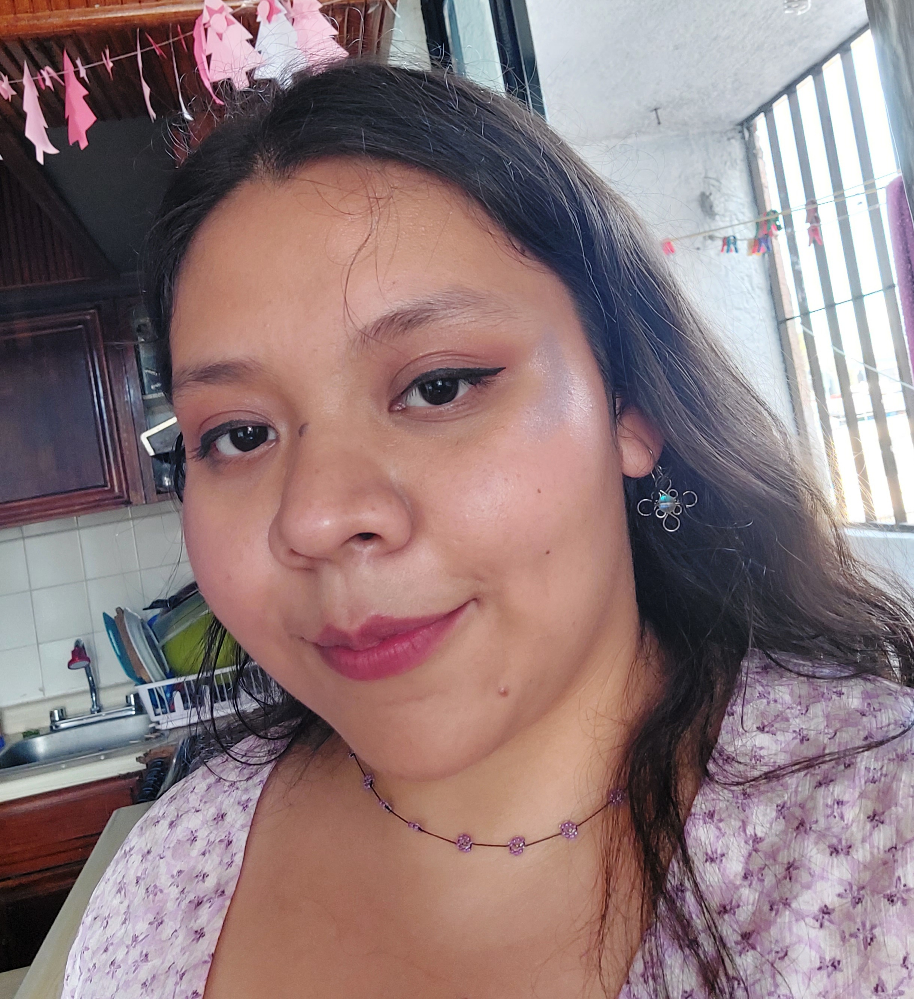

Hola, soy Annia López Cervantes

¡Hola! Soy Annia López y soy egresada de la carrera en Letras Hispánicas la Universidad de Guadalajara. Estudié el diplomado Enseñanza del español como segunda Lengua en la Universidad de Guadalajara, y por el momento soy estudiante en TecnolochicasPRO. Doy clases de inglés y español en La Escuela de Idiomas de Tlaquepaque.
Desarrollo Web
Construyo sitios web responsivos, modernos y minimalistas con tecnologíasde las más demandadas en la industria.
Literatura
Escribo sobre libros escritos por mujeres desde la visión y teoría de género, y autogestiono eventos sobre la escritura contemporánea jalisciense.
Estudiante
Soy egresada de la carrera en Letras Hispánicas en la Universidad de Guadalajara. Estudié el diplomado Enseñanza del español como segunda Lengua en la Universidad de Guadalajara y soy estudiante programadora en TeconolochicasPRO.


Annia López Cervantes demostró ser una estudiante bastante comprometida con su formación como programadora web. Desarrolló habilidades técnicas en corto tiempo y sin duda volvería a trabajar con ella.
Nancy Salazar
Instructora en Tecnolochicas PRO
Annia López Cervantes demostró ser, a lo largo de la carrera, una persona apasionada por la literatura y la gestión literaria. Desarrollo un lenguaje propio y único para hablar de la literatura de mujeres.
Dr.Luis Jorge Aguilera
Profesor en la Universidad de Guadalajara

Annia López Cervantes es una estudiante dedicada y apasionada por el desarrollo web. Su trabajo en HTML y CSS demuestra un gran compromiso y atención al detalle. Recomiendo trabajar con ella ya que su habilidad y entusiasmo son contagiosos.
Mireya Mascorro Delgado
Ing. Telecomunicaciones, Sistemas y Electrónica